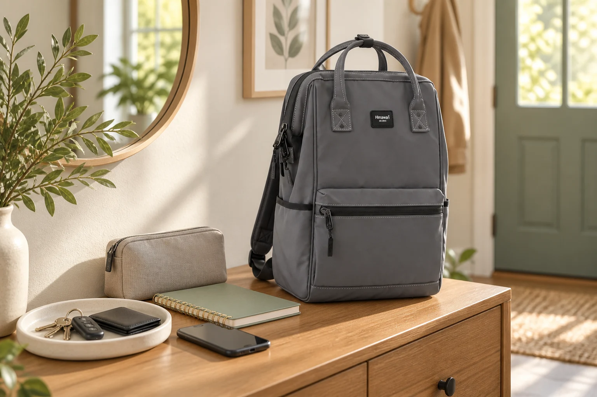

가방을 바꾸는 날, 두 가방 사이의 빈 자리

평일 백팩에서 주말 가방으로 바꾼 뒤 열쇠나 카드가 이전 주머니에 남았다는 것을 알 수 있습니다. 작은 물건을 빠뜨리지 않으려면 두 가방 사이에 임시 자리를 두는 방법을 생각해 볼 수 있습니다. 이전 가방에서 꺼낸 것을 바로 새 가방으로 넣기보다 무엇이 나왔고 무엇이 아직 밖에 있는지 한 번 보이는 상태로 만드는 준비입니다. 오늘 필요한 물건과 집에 남길 것을 그 자리에서 나눕니다.
이전 가방을 비우는 방향
깨끗한 테이블 한쪽을 비우고 가방에서 나온 물건을 놓습니다. 큰 칸에서 작은 칸으로 가거나 자기 가방에서 정한 방향을 따라 확인합니다. 비운 칸과 아직 안 본 칸이 구별되도록 여밈 상태를 정할 수 있습니다. 확인한 주머니를 다시 닫는 방식이든 열어두는 방식이든 자신의 약속이 분명하면 됩니다. 모든 가방에 같은 순서를 적용하기보다 실제 구조를 따라 빠진 자리가 없게 봅니다.
작은 칸의 모서리와 파우치 안쪽도 살펴봅니다. 오래 남은 종이나 동전이 있을 수 있으므로 나온 물건을 곧바로 오늘의 필수품으로 취급하지 않습니다. 필요한 것과 집에서 정리할 것을 나눕니다. 다른 사람의 소품이 있다면 개인 묶음과 구별해 알려줍니다. 가방 교체는 짐을 줄이는 결정과 필요한 물건의 이동이 함께 일어날 수 있지만 두 상태가 같은 것은 아닙니다.
이전 가방에 남겨둘 물건이 있다면 무엇인지 메모합니다. 빈 가방으로 정리했는지 일부를 남겼는지가 다음 교체에서도 읽혀야 합니다. 여러 가방을 번갈아 쓰는 경우에는 가방 이름과 남긴 묶음을 연결할 수 있습니다. 새 가방으로 가져가지 않았다는 사실과 버리거나 잃어버렸다는 판단을 혼동하지 않도록 실제 보관 위치를 남기는 것입니다. 정리가 남은 물건도 어느 자리에 두었는지 알아볼 수 있게 합니다.
필수품은 이름으로 대조한다
자기 외출에 필요한 지갑과 열쇠, 휴대전화 등 물건 이름을 짧게 씁니다. 파우치 하나를 옮겼다고 안의 구성품도 모두 이동했다고 판단하지 않습니다. 충전기는 아직 콘센트에 있고 케이블만 파우치에 돌아왔을 수 있습니다. 본인이 실제로 사용하는 구성에 맞춰 필요한 것을 대조합니다. 목록은 가방에 넣는 개수를 맞추는 표보다 밖에 남은 항목을 알아볼 기록으로 쓸 수 있습니다.
충전 중인 기기나 현관에 있는 출입카드처럼 임시 자리에 아직 없는 물건은 따로 표시합니다. 전날 준비한다면 새 가방 옆에 마지막에 챙길 항목을 남겨두면 됩니다. 넣을 계획이라는 표시와 이미 넣었다는 표시를 구별합니다. 아침에 물건을 가져왔을 때 해당 항목을 갱신하고 출발 전에 남은 항목을 읽습니다. 시간을 정해두었다는 이유만으로 목록의 빈칸을 완료로 바꾸지 않습니다.
Himawari No.1884로 가방을 바꾸는 날에는 임시 자리에 모인 오늘의 묶음부터 새 위치를 정합니다. 충전 소품과 문구처럼 함께 사용할 것은 기존 파우치의 역할을 유지할 수 있습니다. 열쇠와 카드처럼 자주 꺼낼 물건은 실제로 사용할 자리에서 넣고 꺼내봅니다. 이전 포켓의 위치를 그대로 찾기보다 새 가방 안에서 그 역할이 이어지는 곳을 고르는 방법입니다.

같은 위치 대신 같은 역할
새 가방에는 어제와 같은 칸이 없을 수 있습니다. 자주 꺼낼 물건, 함께 쓸 소품, 종이 자료처럼 역할을 먼저 정하고 실제 공간을 확인합니다. 물건이 들어가는지에 이어 여밈이 정상적으로 닫히는지 봅니다. 작은 물건을 넣을 자리가 불분명하면 기존 소품을 활용해 묶을 수 있습니다. 새 포켓을 모두 채우려 하기보다 오늘의 물건이 어디에 있는지 읽을 수 있는 구성을 고릅니다.
특히 자주 꺼낼 한두 물건은 새 위치를 집에서 확인할 수 있습니다. 가방을 안정된 자리에 놓고 필요한 물건을 꺼낸 뒤 다시 넣습니다. 찾다가 여러 칸을 열었다면 어느 위치가 더 편한지 조정할 수 있습니다. 눈을 감고 구별해야 한다는 목표를 만들 필요는 없습니다. 실제로 꺼낼 동작에서 위치와 여밈이 연결되어 있으면 됩니다. 익숙한 파우치 이름도 같은 방식으로 남겨둘 수 있습니다.
새 가방에 짐을 넣는 과정에서 빠진 자리가 생기면 필요한 물건의 우선순위를 봅니다. 중요하다고 정한 물건을 억지로 눌러 담기보다 전체 구성과 이동 방법을 조정합니다. 그날 사용하지 않을 소품은 집에 남길 수 있지만 어떤 물건을 제외했는지 알아볼 기록은 유지합니다. 새로운 가방의 크기에 맞추는 일과 외출 목적에 필요한 준비를 마치는 일을 함께 생각해야 합니다.
출발 전에 두 기록을 맞춘다
이전 가방의 빈자리와 남긴 물건 기록을 읽고, 새 가방의 필수품 목록을 대조합니다. 밖에 남아 있던 물건이 현재 어디에 있는지 확인합니다. 테이블에 작은 부품이 남았으면 오늘 가져갈 것인지 정리할 것인지 다시 구별합니다. 지퍼를 닫기 전에 실제 물건 이름으로 읽으면 이전 가방에서 빠진 항목과 새 가방에 아직 넣지 않은 항목이 각각 보입니다.
외출 후 새 위치가 불편했던 물건이 있으면 다음 교체에서 조정할 항목으로 남깁니다. 모든 포켓 배치를 다시 만들기보다 자주 찾았던 묶음부터 바꿀 수 있습니다. 사용을 마친 뒤 새 가방을 비울 때에도 같은 임시 자리와 목록을 사용할 수 있습니다. 두 가방 사이에 오늘의 소지품을 읽을 시간이 남으면 바꾸는 순간마다 기억으로 전체 구성을 다시 복원할 부담이 줄어듭니다.